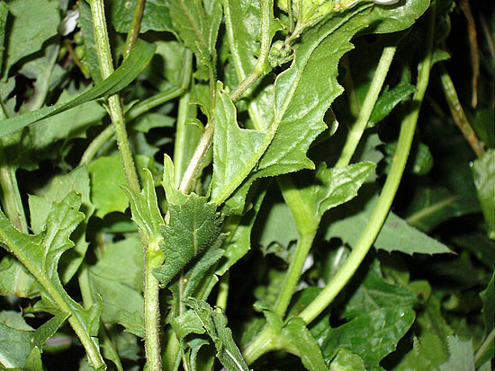
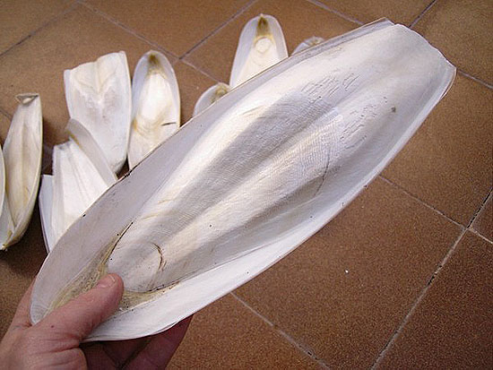
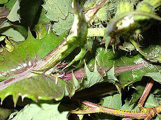
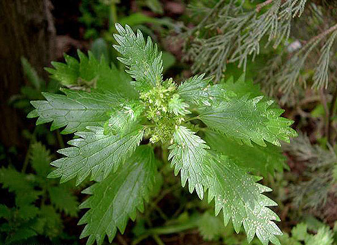

|
LA ALIMENTACIÓN DE LAS TORTUGAS TERRESTRES: CONCEPTOS BÁSICOS - HIERBAS
SILVESTRES
Counyat, 2006
Nota: El artículo está basado en
Geochelone elegans, pero es aplicable a especies afines de climas
secos y estrictamente vegetarianas.
Conceptos Básicos.
Prácticamente todo se habrá dicho ya sobre la alimentación de las
tortugas terrestres; quizá sea el punto de mayor importancia en el
mantenimiento de un tortuga independientemente de su especie.

Recomendaremos alimentos con un correcto
ratio calcio/fósforo, con un mínimo de 2:1, aunque en la naturaleza
variará con toda seguridad. Debemos, en la mayor medida posible, dar
alimentos naturales; es cierto que no siempre es factible salir al
campo a recolectar plantas como el jaramago, el diente de león,
cerraja, correhuela, hojas de parra, flores de hibiscus y de bignónias
(principlamente la de color rojo es la que más les llama la atención)
u otras plantas que encontraremos fácilmente. Por ello, tendremos que
plantearnos el aporte de suplementos como el calcio espolvoreado un
par de veces por semana o añadiendo alguna concha de calcio de la
sepia (jibia), que mordisquearán a su antojo. Como nos encontramos
exclusivamente con animales vegetarianos eliminaremos totalmente
cualquier aporte de proteína animal en su alimentación. El riesgo por
la ingesta de un caracol, una babosa o algo de
carroña es nulo, pero no así si basamos la alimentación en la
utilización de piensos con elevada proporción de proteínas; esto
producirá efectos desastrosos tanto a simple vista, como sería un
acusado piramidismo, como efectos no tan visibles en sus órganos
internos, dañando principalmente hígado y riñones del animal.

En el caso de Geochelone elegans
son muchos los animales que presentan como peculiaridad en su
caparazón algo de piramidismo. Esto se puede observar tanto en
animales capturados como criados en cautividad, no por ello deben
dejarnos de importar las malformaciones de caparazón que podríamos
provocar con una mala alimentación.
Si por desgracia acabamos basando la alimentación de nuestros animales
en verduras de supermercado, yo recomendaría como base principal de
ésta la escarola y la endibia, además son grandes devoradoras de
tomate y calabacín aunque de este último abusaremos lo mínimo posible;
también podremos aportar canónigos, hojas de col, y algo de lechuga que
siempre viene bien para mantenerlas hidratadas, aunque para poco más
sirve.
En el caso que el supermercado acabe siendo la forma más cómoda de
alimentar a nuestros quelonios, podemos también aportar algo de fibra
seca como diente de león, que trituraremos y espolvorearemos encima
del resto de alimentos; será fácil conseguirlo en herboristerías.
Con estos animales he de decir que nunca he probado piensos
artificiales. Sí con otras especies como Testudo hermanni y con
buenos resultados, pero nunca como aporte único de
alimentación. Cosa que si ocurre en algunos criadores principalmente
alemanes, que basan el 100 % de la alimentación en la utilización de
piensos secos como el T-Rex , cuyo porcentaje seco de proteína ronda
el 14 %. Estos piensos suelen venir aromatizados y, aunque inicialmente
las tortugas pudieran se reacias a ingerirlos, finalmente acaban
siempre por aceptarlos.
Hierbas silvestres.
Queda claro que la dieta de las Geochelone Elegans en
cautividad nunca podrá ser igualada a la del estado silvestre, por lo
que acabaremos basando su alimentación en productos similares a los de
nuestras Testudo, y que se compone mayoritariamente de las
mismas plantas de las que se ha alimentado históricamente el ser
humano y la mayoría de vertebrados herbívoros, prefiriendo obviamente
las especies de hoja ancha y blanda, y en general las que poseen
escasa toxicidad. Muchas de estas especies tienen equivalentes en la
vegetación propia de caminos, campos de cultivo, etc., y forman parte
habitual del capítulo de 'malas hierbas' de las zonas ajardinadas.

Las familias botánicas que parecen
ofrecer mayor preferencia por las tortugas terrestres son las
compuestas -ver más abajo-, leguminosas o papilionáceas -en especial
géneros
mayoritariamente compuestos por plantas de porte herbáceo como
Trifolium, Lathyrus, Vicia, Hedysarum,
Lotus, Medicago, etc.-, malváceas -malvas de los géneros
Malva, Lavatera, Althaea, Alcea-, chenopodiáceas -acelgas y
remolachas (Beta), cenizos o bledos (Chenopodium), espinacas (Spinacia),
arnachos (Atriplex)-, poligonáceas -romanzas y acederas (Rumex,
Emex), persicarias (Polygonum), etc.), plantagináceas (Plantago),
amarantáceas (Amaranthus, Alternanthera), boragináceas
-borrajas (Borago), viboreras (Echium), heliótropos (Heliotropium),
lenguas de buey (Anchusa, Cynoglossum), etc.-, crassuláceas -(Crassula,
Sedum, etc.)-, crucíferas -jaramagos (Sisymbrium, Diplotaxis,
Rapistrum), rucas (Eruca), coles y berzas (Brassica),
carraspiques (Iberis), rábanos (Raphanus), etc.-,
papaveráceas -amapolas (Papaver, Glaucium)-, rosáceas (en
especial las de porte herbáceo como fresas (Fragaria,
Duchesnea), cincoenramas (Potentilla), agrimonias (Agrimonia),
etc.-, urticáceas -ortigas (Urtica), parietarias (Parietaria)-,
portulacáceas -verdolaga (Portulaca)-, cariofiláceas -collejas
(Silene), gipsófilas (Gypsophila), claveles (Dianthus),
sanguinarias (Paronychia), jaboneras (Saponaria),
pamplinas (Stellaria, Spergularia)-, dipsacáceas (Dipsacus,
Scabiosa), verbenáceas (Verbena, Lippia), violáceas
(violetas -género Viola-), así como todo tipo de
monocotiledóneas de baja toxicidad como las gramíneas -Avena,
Bromus, Poa, Festuca etc,-, cyperáceas -Carex, Schoenus,
Cyperus, Scirpus-.
En el caso de las compuestas destacan
por su mayor preferencia las especies que sólo poseen flores liguladas
o en lengüeta como los dientes de león (Taraxacum, Leontodon,
Hyoseris, Hypochoeris, etc.), las cerrajas (Sonchus, Crepis,
Picris, Tolpis, etc), achicorias o endivias (Cichorium),
lechugas y escarolas (Lactuca), los cardos silvestres (Cardus,
Cirsium, Scolymus, etc.), las alcachofas y cardos cultivados (Cynara),
las centaureas (Centaurea, Mantisalca, Cheirolophus, etc.); en
general muestran menor preferencia por las especies que poseen
capítulos con flores tubulares centrales y liguladas periféricas -como
las típicas margaritas-, ya que muchas de ellas poseen esencias y
compuestos tóxicos.
De algunas familias botánicas de baja o moderada toxicidad, tienden a
preferir las especies de hoja más blanda o suculenta o los brotes
nuevos y turiones, como ocurre con algunas cistáceas, convolvuláceas,
resedáceas, rubiáceas, escrofulariáceas, asparagáceas (esparragueras),
iridáceas (lirios, gladiolos), liliáceas, orquidáceas, ruscáceas
(ruscos) y smilacáceas (zarzaparrillas).
En general huyen de las familias con alta toxicidad foliar como
araliáceas, aristoloquiáceas, asclepiadáceas, euforbiáceas, rutáceas,
ranunculáceas, solanáceas, amaryllidáceas, aráceas, colchicáceas,
hyacintáceas, juncáceas, etc.; también de las que suelen poseer alta
concentración de esencias o combinación de éstas con tóxicos -aun
cuando consuman las especies que poseen dichos productos en menor
cantidad, o bien lo hagan en etapas tempranas en las que aún no poseen
suficiente concentración- como geraniáceas, labiadas, gutíferas o
hipericáceas, pittosporáceas, valerianáceas, umbelíferas, aliáceas
(ajos).
No obstante lo anterior es importante considerar que, como el
resto de vertebrados, las tortugas terrestres deben complementar su
dieta con especies 'medicinales' necesarias para purgarse, cicatrizar
heridas internas, etc. Algunas especies vegetales de toxicidad
moderada pueden formar parte de dicha sección de la dieta de nuestras
tortugas, por lo que no es raro que puedan consumir pequeñas
cantidades de acantos (Acanthus), asfódelos (Asphodelus),
aros y calas (Arum, Arisarum, Zantedeschia), jacintos
silvestres (Dipcadi, Ornithogalum, Urginea) etc., y sobre todo
de umbelíferas (eneldo, perejil, férula, etc.).

La incorporación de muchas especies no
nativas a nuestra flora silvestre y cultivada aumenta sustancialmente
el margen de la dieta útil de las tortugas, incluyendo numerosos
representantes de familias como las aizoáceas o mesembriantemáceas,
cucurbitáceas, onagráceas, oxalidáceas, aloáceas, o los representantes
menos espinosos de agaváceas y cactáceas.
Además de todo lo indicado, y en el caso de tener a los animales en
estado de semilibertad durante los meses cálidos, podremos complementar
su dieta con frutos desprendidos de las plantas, en cuyo caso debe
tenerse en cuenta que muchas especies de hoja tóxica, cuyas partes
verdes son desechadas por las tortugas, producen frutos comestibles;
un caso típico es el tomate (Lycopersicum) y en general los
frutos de la mayoría de solanáceas. Más abundante es el caso de
plantas que, teniendo hojas palatables para las tortugas, no
desarrollan éstas a nivel del suelo, por lo que sólo poseen acceso a
los frutos caídos; es el caso, entre otros muchos, de la vid (Vitis),
o las rosáceas cultivadas como melocotones, ciruelas, cerezas, etc.
Para poder localizar algunas de estas plantas os remiendo algunos
enlaces de paginas web, aunque obviamente la forma de acceso a la
identificación de las especies es sabiendo primero su nombre, cosa que
en la mayoría de los casos es un problema.
-
Web de hoseito.
-
Herbario Virtual de la Universidad de Alicante.
-
Flora del Parque Natural de l albufera de Valencia.
-
Herbario Digital de Beneixama y el Valle del Alto Vinalopó (L'Alcoià,
Alicante).
-
Herbari
Virtual del Mediterrani Occidental.
-
Herbari
Virtual de les Males Herbes.
|